आर्टिफिशियल इंटेलिजन्स (AI) ची सोपी ओळख
आपल्या रोजच्या व्यवहारातील आणि ऑफिसच्या कामातील AI चा वापर
तुम्ही आधीपासूनच AI वापरत आहात का?
- तुम्ही रस्त्यावरील ट्रॅफिक पाहण्यासाठी 'गुगल मॅप्स' (Google Maps) वापरता का?
- तुम्ही मोबाईलला 'हे गुगल' (Hey Google) सारखे व्हॉईस कमांड्स देता का?
- तुम्ही युट्यूब किंवा नेटफ्लिक्सवर सुचवलेले व्हिडिओ पाहता का?
- मोबाईलवर मेसेज टाईप करताना शब्दांचे स्पेलिंग दुरुस्त करणाऱ्या 'ऑटोकरेक्ट'ची मदत घेता का?
जर यापैकी एकाही प्रश्नाचे उत्तर 'हो' असेल... तर तुम्ही आधीपासूनच AI वापरत आहात! 😊
आर्टिफिशियल इंटेलिजन्स म्हणजे नक्की काय?
साधी व्याख्या: AI म्हणजे माणसाप्रमाणे विचार करण्याची, डेटा समजून घेण्याची आणि निर्णय घेण्याची कॉम्प्युटर किंवा मशीनची क्षमता.
- माहितीच्या (Data) अफाट साठ्यातून स्वतःहून महत्त्वाचे पॅटर्न शोधणारी सिस्टीम.
- आपल्या रोजच्या अडचणी आणि क्लिष्ट कामे सोपी करण्यासाठी बनवलेले इंजिन.
- भविष्यात काय घडू शकते, याचा डेटाच्या आधारे अचूक अंदाज लावणारे तंत्रज्ञान.
AI आपल्या सभोवतालीच आहे
आपल्या मोबाईलमधील सॉफ्टवेअर्स आपले काम सोपे करण्यासाठी बॅकग्राउंडला सतत काम करत असतात:
- गुगल मॅप्स: रस्त्यावरील गर्दी (Live Traffic) पाहून आपल्याला लगेच दुसरा सोपा रस्ता सुचवते.
- युट्यूब आणि नेटफ्लिक्स: तुमचा मूड आणि आवड ओळखून तुम्हाला आवडतील तेच व्हिडिओ समोर आणते.
- स्मार्टफोन: सेकंदात आपला चेहरा ओळखून फोन अनलॉक करतो आणि फोटो आपोआप सुंदर बनवतो.
- ऑनलाईन शॉपिंग: तुम्ही पूर्वी काय खरेदी केले ते पाहून तुम्हाला उपयोगी पडतील अशाच वस्तू दाखवते.
- ईमेल फिल्टर: नको असलेले फालतू (Spam) मेसेज मुख्य इनबॉक्समधून स्वतःहून बाजूला काढते.
आपण AI का शिकले पाहिजे?
AI वापरण्यास शिकल्यामुळे तुमच्या रोजच्या कामाची पद्धत आणि कार्यक्षमता पूर्णपणे बदलू शकते:
- ⏳ वेळेची प्रचंड बचत: मसुदा तयार करणे किंवा त्याचे फॉरमॅटिंग करणे या कामांचा वेळ वाचतो.
- 💼 साधी आणि सोपी कामे: रोजची कागदपत्रांची कंटाळवाणी आणि पुन्हा पुन्हा करावी लागणारी कामे झटपट होतात.
- 📈 कामाचा दर्जा सुधारतो: कमी वेळेत अचूक आणि दर्जेदार आउटपुट तयार करता येते.
- 🤝 उत्तम निर्णय क्षमता: कोणताही महत्त्वाचा निर्णय घेताना डेटावर आधारित मदत मिळते.
महत्त्वाचा विचार: AI ही भविष्यातील गोष्ट नाही—ती आपल्या वर्तमानातील वस्तुस्थिती आहे आणि...
माणूस आणि AI यांच्या शिकण्यात काय फरक आहे?
- आपण (माणसं): आपण आजूबाजूचे अनुभव, आई-वडिलांचे किंवा शिक्षकांचे मार्गदर्शन आणि चुकांमधून शिकतो.
- AI सिस्टीम: ही सिस्टीम केवळ आणि केवळ लाखो जुन्या डेटा फाईल्स, आकडेवारी आणि पॅटर्न्सचा अभ्यास करून स्वतःचे नियम तयार करते.
साधे उदाहरण: एखादे लहान मूल कुत्र्याचे मोजके फोटो किंवा प्रत्यक्षात त्याला पाहून कुत्रा ओळखायला शिकते. पण AI ला कुत्रा ओळखण्यासाठी हजारो फोटोंमधील पिक्सल्सचा अभ्यास करावा लागतो.
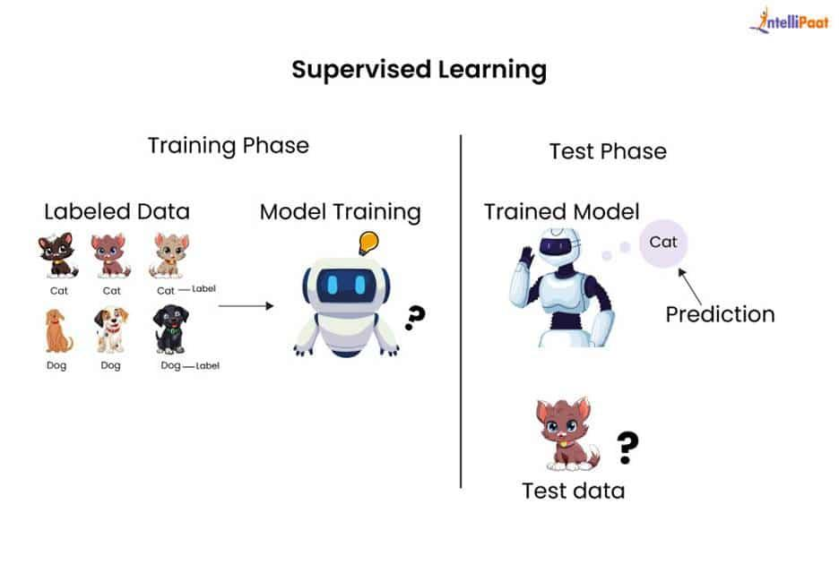
AI चा खरा इंधन: 'डेटा' (Data)
डेटा म्हणजे काय? कोणतीही माहिती जी कॉम्प्युटर समजू शकतो. या माहितीचा अभ्यास करूनच AI स्वतःला अधिक हुशार बनवत जाते.
डेटाचे दैनंदिन प्रकार:
- पाहण्यासारखी माहिती: फोटो, व्हिडिओ आणि डिजिटल इमेजेस 📸
- वाचण्यासारखी माहिती: मेसेज, टिप्पण्या (Comments) आणि ऑफिसचे ईमेल्स ✉
- आकडेवारी: एक्सेल शीट्स, परफॉर्मन्स चार्ट्स आणि आर्थिक टेबल 📊
- ऐकण्यासारखी माहिती: आवाजाचे रेकॉर्डिंग आणि ग्राहकांचे कॉल फाईल्स 🎤
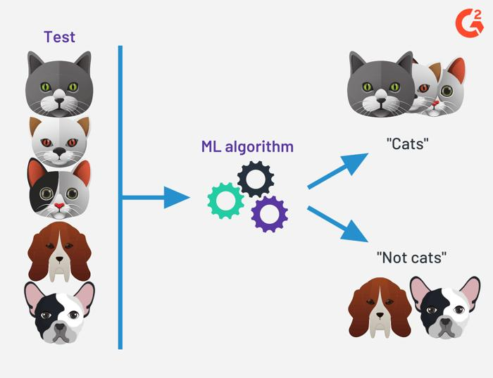
AI कसे ओळखते: मांजर की कुत्रा?
कॉम्प्युटरला कोणतेही कडक नियम न सांगता वो स्वतःहून फोटो कसा ओळखतो ते पाहूया:
- पायरी १: आपण AI सिस्टीमला मांजर आणि कुत्र्यांचे हजारो वेगवेगळे फोटो दाखवतो.
- पायरी २: सिस्टीम त्या फोटोंमधील बारीक पिक्सल्स, कानाचा आकार आणि डोळ्यांची ठेवण तपासून पाहते.
- पायरी ३: या अभ्यासाच्या जोरावर, जेव्हा आपण एखादा नवीन फोटो दाखवतो, तेव्हा ती सिस्टीम अचूकपणे सांगते की तो कुत्रा आहे की मांजर.
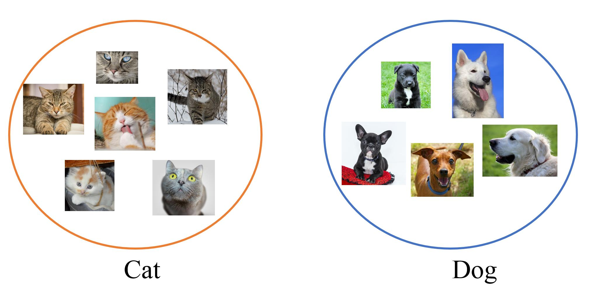
ऑटोमेशन (Automation) आणि AI मधील फरक
| ऑटोमेशन (ठरलेले नियम) | AI (सतत नवीन शिकणे) |
|---|---|
| फक्त आधीपासून ठरवून दिलेल्या नियमांवर चालते. यात बदल होत नाही. | माहितीचा अभ्यास करून स्वतःमध्ये सतत सुधारणा करत राहते. |
| प्रत्येक वेळी अगदी सारखेच आणि यांत्रिक उत्तर देते. | परिस्थिती आणि नवीन डेटा पाहून आपले उत्तर बदलू शकते. |
| उदाहरण: साधा कॅल्क्युलेटर. | उदाहरण: ट्रॅफिकनुसार रस्ता बदलणारे गुगल मॅप्स. |
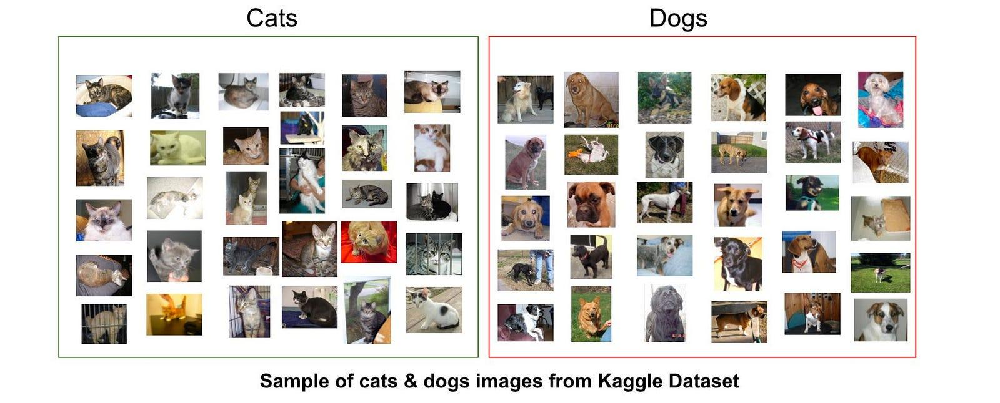
AI विरुद्ध मानवी विचार
आपल्याला हे समजले पाहिजे की AI माणसाची जागा घेऊ शकत नाही, तर ते माणसाला मदत करण्यासाठी आहे:
- आर्टिफिशियल इंटेलिजन्स (AI): प्रचंड वेगाने काम करणे, लाखो फाईल्स एका सेकंदात तपासणे आणि थकवा किंवा पूर्वग्रह न बाळगता आकडेमोड करणे यात सर्वोत्तम आहे.
- मानवी बुद्धिमत्ता (माणूस): कल्पकता, भावना, आपुलकी, परिस्थितीचे गांभीर्य ओळखणे आणि योग्य-अयोग्याची जाण असणे या गुणांमध्ये सर्वोत्तम आहे.
AI चे प्रकार (सोप्या भाषेत)
- नॅरो एआय (Narrow AI - आजचे वास्तव): असे सॉफ्टवेअर्स जे केवळ एकाच ठराविककामात अत्यंत हुशार असतात.
- उदाहरणे: गुगल मॅप्स, चेहऱ्यावरून phone अनलॉक होणे, किंवा भाषेचा अनुवाद करणारे सॉफ्टवेअर.
- जनरल एआय (General AI - फक्त एक कल्पना): कॉम्प्युटर माणसासारखाच अष्टपैलू होऊन स्वतःच्या बुद्धीने सर्व प्रकारची कामे करू शकणे.
- आजची परिस्थिति: हे तंत्रज्ञान सध्या जगात कुठेही अस्तित्वात नाही.
प्रॅक्टिकल उदाहरण १: गुगल मॅप्स कसे चालते?
शहरातील एवढ्या गर्दीत गुगल मॅप्स आपल्याला पोहोचण्याची अगदी अचूक वेळ कशी सांगू शकते?
- त्या रस्त्यावरून जाणाऱ्या हजारो लोकांच्या मोबाईलमधील लाईव्ह स्पीडचा डेटा गुगल गोळा करत असते.
- या लाईव्ह डेटाची तुलना जुन्या दिवसांतील ट्रॅफिकच्या रेकॉर्डसोबत केली जाते.
- पुढील रस्त्यावर जाम असल्यास ते आपल्याला आधीच सूचित करून दुसरा मोकळा रस्ता दाखवते.
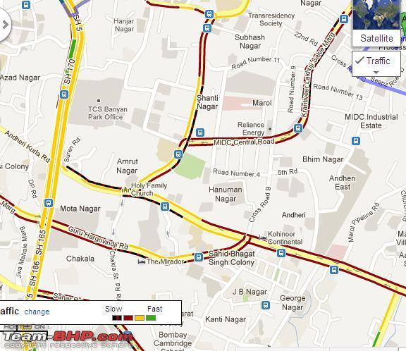
प्रॅक्टिकल उदाहरण २: युट्यूब आणि नेटफ्लिक्स
माझ्या मोबाईलमधील युट्यूब स्क्रीन आणि तुमच्या मोबाईलमधील स्क्रीन वेगळी का दिसते?
- तुम्ही कोणत्या व्हिडिओवर क्लिक केले, कोणता व्हिडिओ पूर्ण पाहिला आणि कोणता सोडून दिला, याची नोंद सिस्टीम ठेवत असते.
- तुमच्यासारखीच आवड असणारे जगातले इतर लोग काय पाहत आहेत, याचाही अभ्यास केला जातो.
- त्यावरून फक्त आणि फक्त तुमच्या आवडीचे व्हिडिओ तुमच्या स्क्रीनवर आणले जातात.
प्रॅक्टिकल उदाहरण ३: आपल्या हातातील स्मार्टफोन
तुम्हाचा रोजचा मोबाईल फोन अनेक कामांसाठी अंतर्गत AI का वापर करत असतो:
- फेस अनलॉक: सेकंदाच्या भागामध्ये तुमच्या चेहऱ्याचे बिंदू तपासून लॉक उघडतो.
- स्मार्ट कॅमेरा: तुम्ही झाडाचा फोटो काढत आहात की माणसाचा, हे ओळखून रंग आणि प्रकाश आपोआप चांगला करतो.
- प्रेडिक्टिव्ह कीबोर्ड: तुम्ही पुढचा शब्द काय टाईप करणार आहात, याचा अंदाज लावून तो शब्द आधीच सुचवतो.
एक छोटा आणि गमतीशीर प्रश्न!
खालीलपैकी कोणती गोष्ट केवळ 'ठरलेले नियम' आहे आणि कोणती 'AI' आहे? अंदाज लावा आणि क्लिक करा:
या भागातून आपण काय शिकलो?
- AI हे जुन्या डेटा मधील पॅटर्न्स आणि आकडेवारी समजून काम करते.
- सिस्टीममध्ये जेवढा जास्त आणि चांगला डेटा टाकला जाईल, तेवढी त्याची अचूकता वाढते.
विभाग ३: आपल्या आजूबाजूचे AI
आपल्या नकळत रोजच्या जीवनात आणि विविध क्षेत्रांत हे तंत्रज्ञान कशा प्रकारे काम करत आहे, ते आपण सोप्या उदाहरणांसह पाहूया.
AI सोबत आपला संपूर्ण दिवस
- 🌅 सकाळ: मोबाईल उघडल्याबरोबर महत्त्वाचे ईमेल्स आणि बातम्या व्यवस्थित सॉर्ट केलेल्या मिळतात.
- 🚗 ऑफिसचा प्रवास: रस्ते शोधण्यासाठी गुगल मॅप्स मदत करते आणि कॅब सहज उपलब्ध होतात.
- 💼 ऑफिसमधील काम: आपण टाईप केलेल्या ड्राफ्ट मधील चुका आपोआप दुरुस्त होतात.
- 🌙 संध्याकाळ: मनोरंजन आणि बँक खात्यातून होणारे व्यवहार सुरक्षित ठेवण्यासाठी सुरक्षा सिस्टीम कार्यरत असते.
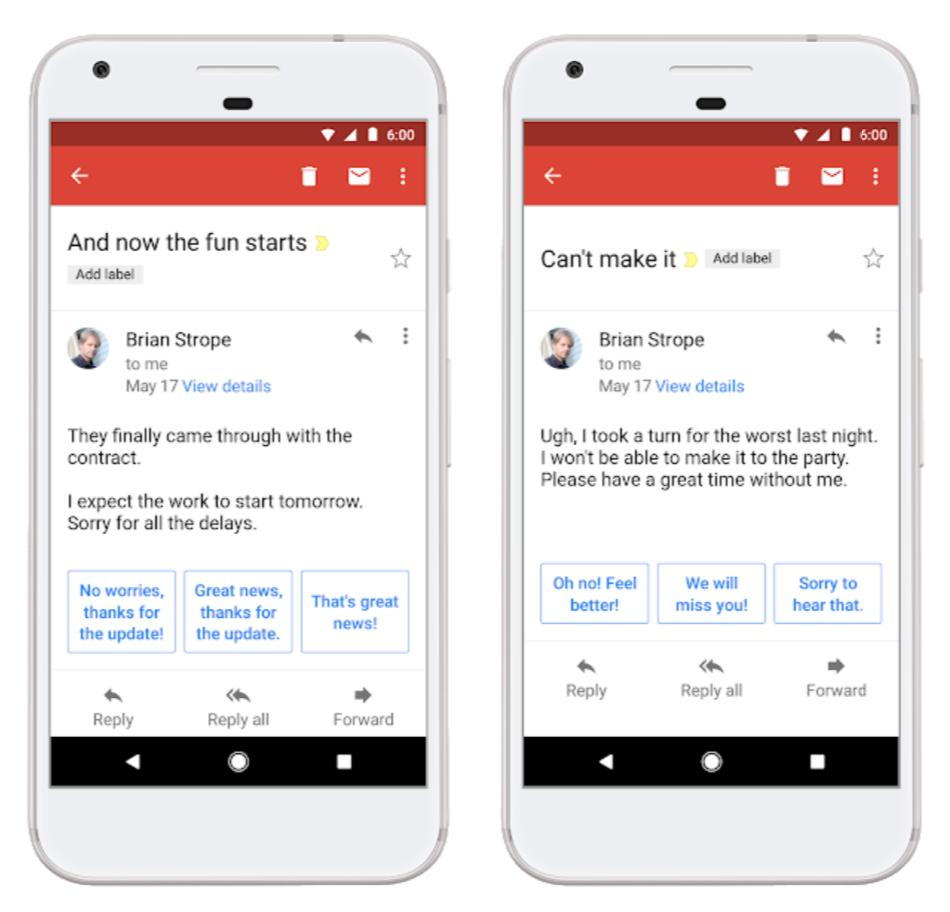
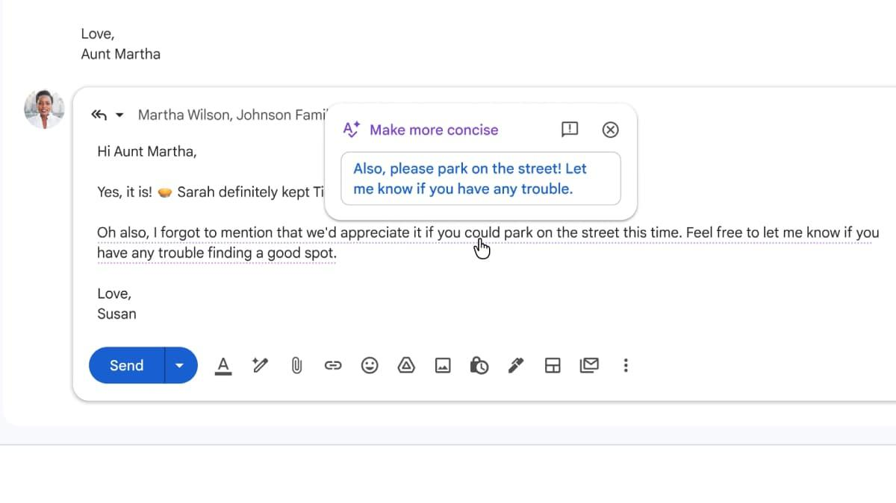
प्रवास आणि वाहतूक व्यवस्था
- गर्दी टाळणे: रिअल-टाईम माहिती घेऊन वाहतूक कोंडी नसलेला रस्ता दाखवला जातो.
- डायनॅमिक प्राईसिंग: पाऊस पडत असताना किंवा गर्दीच्या वेळी गाड्यांचे भाडे मागणीनुसार ठरवले जाते.
- पार्सलचा अंदाज: कुरिअर वेळेत पोहोचतील की नाही, याचा अंदाज जुन्या नोंदणीवरून लावला जातो.
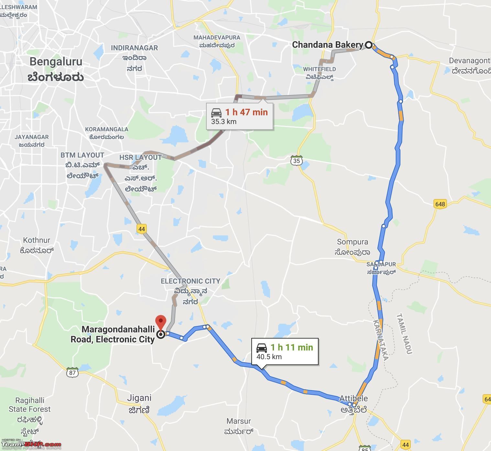
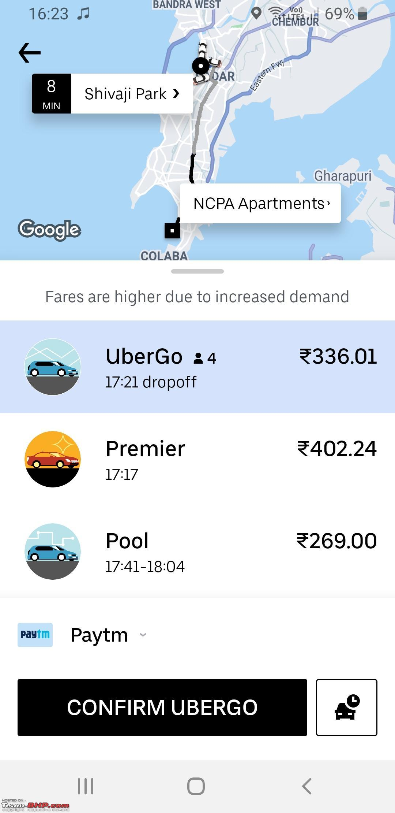
ऑनलाईन खरेदी आणि ई-कॉमर्स
- सुचवलेल्या वस्तू: शर्ट पाहिला असल्यास त्याला मॅचिंग असणारी पॅन्ट किंवा घड्याळ सिस्टीम सुचवते.
- खास ऑफर्स: कार्टमध्ये ठेवलेल्या वस्तूंवर ग्राहकांना आकर्षित करण्यासाठी विशेष सवलत दिली जाते.
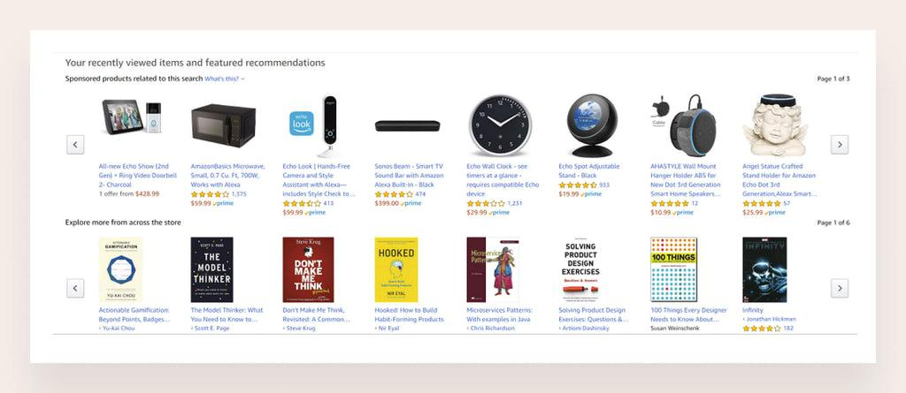
बँकिंग आणि खात्यांची सुरक्षा
- धोका ओळखणे (Fraud Detection): संशयास्पद व्यवहार झाल्यास सिस्टीम व्यवहार तात्काळ रोखते.
- ऑटोमॅटेड मदत: बँकेचे चॅटबॉट्स चेकबुक मागवणे किंवा बॅलन्स तपासणे सोपे करतात.
सोशल मीडिया प्लॅटफॉर्म्स
- स्क्रीनवर खिळवून ठेवणे: फेसबुक किंवा इंस्टाग्राम तुम्हाला अशाच पोस्ट दाखवते ज्या तुम्ही जास्त वेळ थांबून पाहता.
- योग्य जाहिराती: तुमच्या वयानुसार आणि आवडीनुसार व्यावसायिक जाहिराती दाखवल्या जातात.

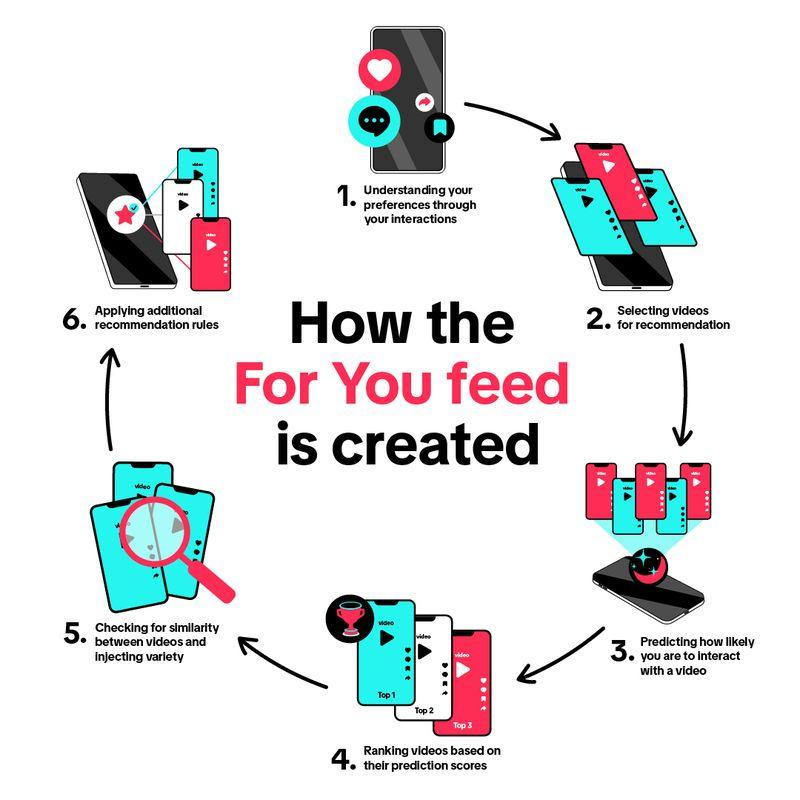
ऑफिसमधील उत्पादकता वाढवणे
- रेडीमेड टेम्पलेट्स: विषयाचे नाव सांगितले की कॉम्प्युटर पूर्ण पत्रक तयार करून देतो.
- माहितीचे विश्लेषण: मोठ्या टेबलमधून मुख्य मुद्दे ओळखून त्याचा सुंदर चार्ट मिळतो.
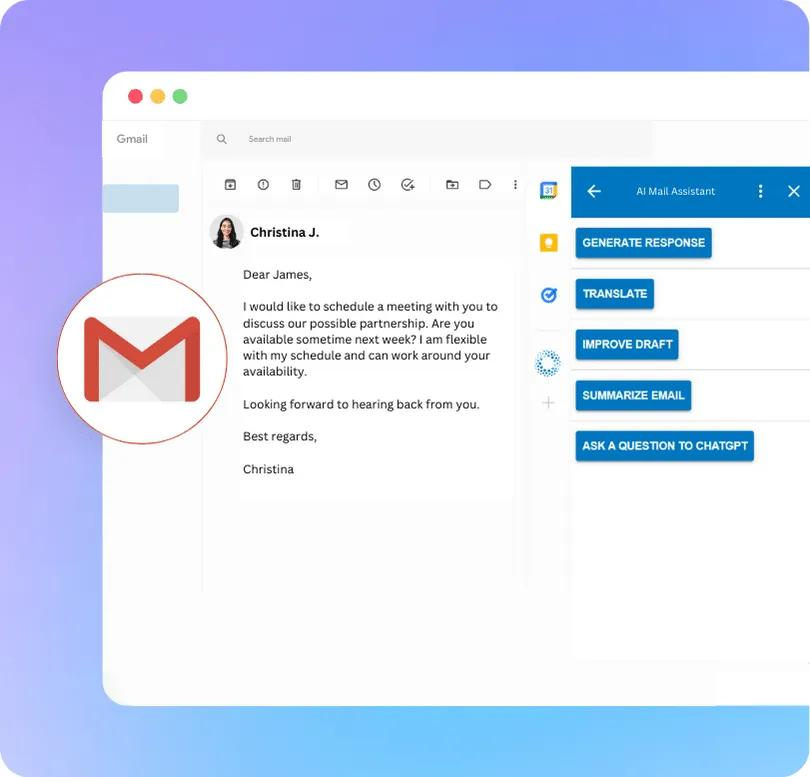
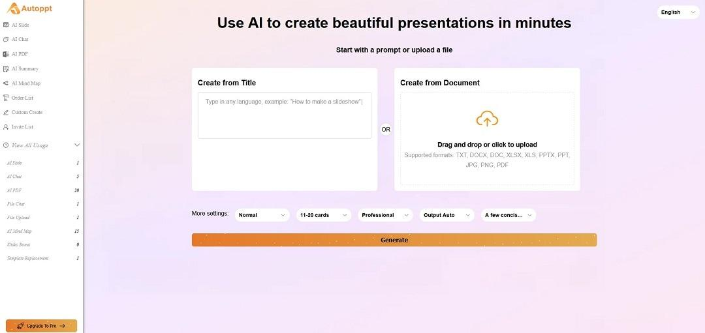
HR (मानव संसाधन) आणि प्रशासकीय कामे
- बायोडाटा निवडणे: उमेदवारांचे अर्ज फिल्टर करून हव्या असलेल्या अनुभवाचे उमेदवार शोधणे.
- इंटरव्ह्यूचे नियोजन: वेगवेगळ्या विभागांच्या अधिकाऱ्यांची वेळ तपासून वेळापत्रक ठरवणे.
- कंपनीच्या नियमांची माहिती: नेहमीच्या प्रश्नांची उत्तरे चॅटद्वारे त्वरित देणे.
मनोरंजन आणि संगीत क्षेत्र
- गाण्यांची निवड: तुमचा मूड किंवा प्रवासाच्या वेळेनुसार आपोआप गाणी प्ले केली जातात.
- पुढचा व्हिडिओ: तुमच्या आवडीचा पुढचा माहितीपट रांगेत लावला जातो.
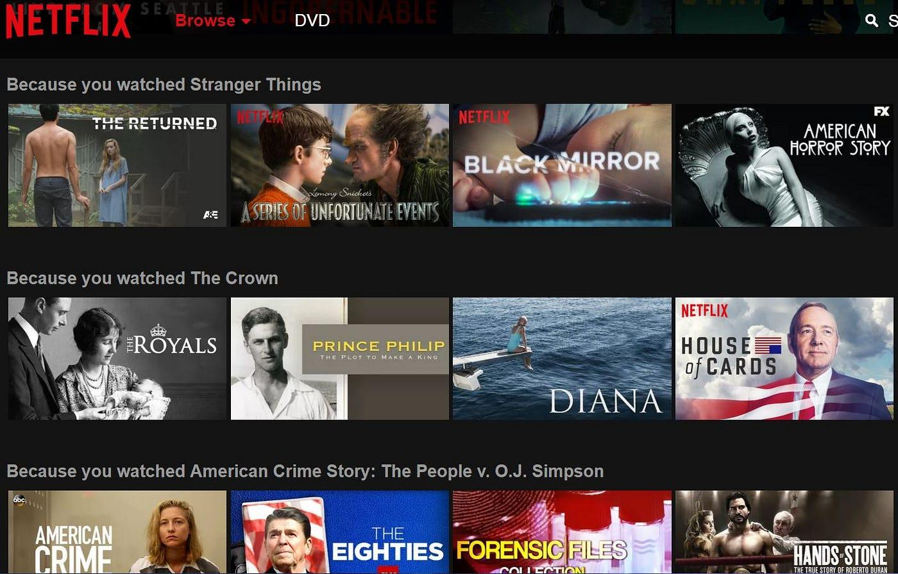
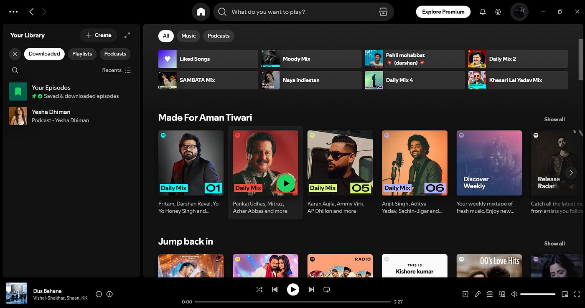
वैद्यकीय क्षेत्राला मदत
- एक्स-रे आणि स्कॅनिंग: रिपोर्ट्स मधील बारीक त्रुटी हायलाईट करून डॉक्टरांना अचूक निदानासाठी मदत करणे.
- स्मार्ट घड्याळे: हातातील डिजिटल घड्याळ हृदयाचे ठोके तपासून अडचण आल्यास अलार्म वाजवते.
विचार करा आणि सांगा! (आपला अनुभव)
चला, आपण आपल्या रोजच्या अनुभवांवरून दोन गोष्टी शोधूया:
- आज सकाळी ऑफिसला येण्यापूर्वी तुम्ही तुमच्या मोबाईलमध्ये कोणती टूल्स वापरली?
- तुमच्या विभागातील असे कोणते काम आहे, जे AI च्या मदतीने सोपे होऊ शकते?
या भागाचा गोषवारा
- AI हे संवाद, सुरक्षा, वाहतूक आणि ऑफिसच्या कामात मोठ्या प्रमाणावर वापरले जात आहे.
- याचा मुख्य उद्देश गुंतागुंतीची माहिती सोपी करून माणसाचा वेळ वाचवणे हाच आहे.
विभाग ४: जनरेटिव्ह AI (Generative AI) म्हणजे काय?
सोपी व्याख्या: जनरेटिव्ह AI हे फक्त माहिती गोळा करत नाही, तर आपण दिलेल्या सूचनेनुसार अगदी नवीन आणि फ्रेश मसुदा किंवा चित्रे स्वतःहून तयार करू शकते!
- ऑफिसचे संपूर्ण पत्र अगदी शून्यापासून लिहून देतो.
- कार्यक्रमासाठी लागणारे बॅनर्स आणि संकल्पना चित्रे तयार करतो.
- एक्सेलचे मोठे फॉर्म्युले किंवा कोडिंगचे नियम चुटकीसरशी लिहून देतो.
जुने AI विरुद्ध जनरेटिव्ह AI
| जुने AI (फक्त विश्लेषण करणे) | जनरेटिव्ह AI (नवीन निर्मिती करणे) |
|---|---|
| फक्त फाईल्स तपासणे किंवा वर्गीकरण करणे एवढेच याचे काम होते. | स्वतःच्या बुद्धीने नवीन मसुदा किंवा डिझाईन्स बनवून देते. |
| उदाहरण: एखादा ईमेल स्पॅम आहे की नाही ओळखणे. | उदाहरण: विस्कळीत मुद्द्यांवरून व्यावसायिक उत्तर तयार करून देणे. |
हे टूल्स नक्की काय काय करू शकतात?
- मसुदा तयार करणे: ऑफिसचे ईमेल्स, ट्रेनिंगचे अजेंडे आणि परिपत्रके लिहिणे.
- मोठ्या फाईल्स छोट्या करणे: सरकारी नियम किंवा कठीण कागदपत्रे वाचून त्याचे मुख्य मुद्दे सांगणे.
- चित्र आणि डिझाईन्स बनवणे: ट्रेनिंगसाठी लागणारी पोस्टर्स तयार करणे.
- कल्पना सुचवणे: ऑफिसमधील कार्यक्रमांचे आयोजन किंवा उपक्रमांसाठी आयडिया देणे.
उदाहरण १: स्वतःहून पत्र लिहिणे
हे टूल आपल्या भाषेचे नियम समजून घेऊन काही सेकंदात पूर्ण पत्र कसे तयार करते पहा:
- **तुमची साधी सूचना:** *"उद्यासाठी आजारपणाची सुट्टी हवी आहे, मॅनेजरसाठी ईमेल लिहून दे."*
- **AI चे उत्तर:** ते स्वतःहून विषयाची ओळ, आदरयुक्त शब्द आणि नावे भरण्यासाठी रिकामी जागा ठेवून ईमेल तयार करते.
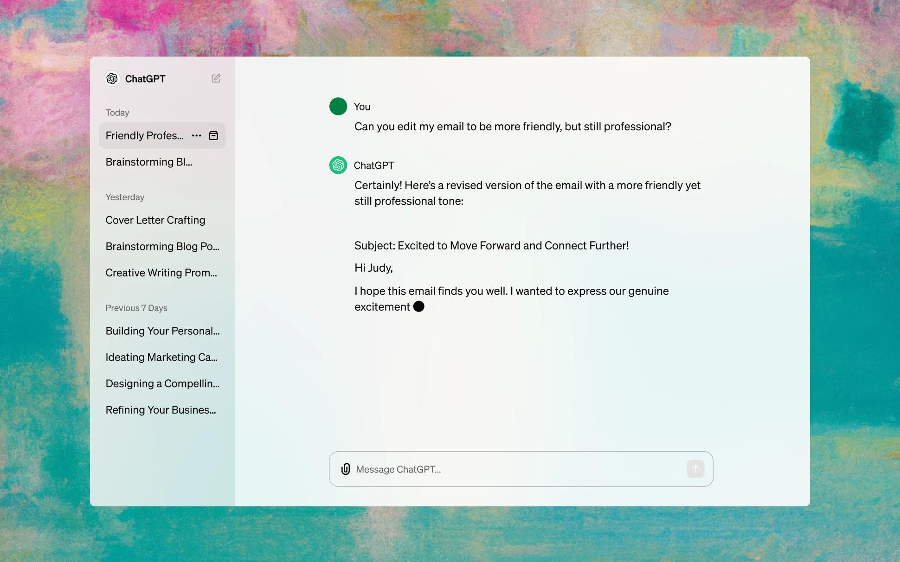
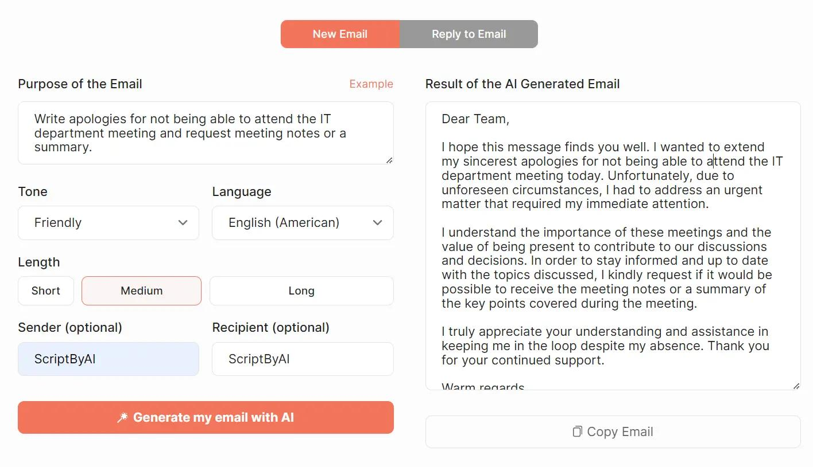
उदाहरण २: शब्दांवरून चित्र बनवणे
तुम्ही मनात विचार केलेली कल्पना फक्त शब्दांत लिहिली, की कॉम्प्युटर त्याचे सुंदर चित्रात रूपांतर करतो:
- **तुमची सूचना:** *"पर्यावरणपूरक सुंदर इमारत, गच्चीवर झाडे आणि सायंकाळची वेळ."*
- **AI चे उत्तर:** कॉम्प्युटर इंटरनेटवरील लाखो चित्रांचा अभ्यास करून डिजिटल चित्र सेकंदात तयार करतो.

उदाहरण ३: कठीण आणि मोठी कागदपत्रे समजून घेणे
मोठ्या फाईल्स वाचण्यात जाणारा आपला वेळ वाचवण्यासाठी हे सर्वात उत्तम साधन आहे:
- **समस्या:** फॅक्टरीच्या नवीन नियमांचे ३० पानांचे कठीण पुस्तक वाचायचे आहे.
- **स्मार्ट उपाय:** तो मजकूर कॉपी करून AI ला मुख्य मुद्दे आणि कायदेशीर परिणाम विचारणे.
- **फायदा:** तासनतास वाचण्याचे कष्ट वाचतात आणि मुख्य मुद्दे लगेच समजतात.
गुगल सर्च (Google) आणि AI असिस्टंटमधील फरक
- **पारंपारिक गुगल सर्च:** तुम्ही एखादा शब्द टाकता → गुगल हजारो वेबसाईटच्या लिंक्स देते.
- **AI असिस्टंट (चॅटबॉट्स):** तुम्ही थेट प्रश्न विचारता → ते सर्व माहितीचा अभ्यास करून स्वतःच्या शब्दांत तयार केलेले **एकच अचूक उत्तर** देते.
आज बाजारात उपलब्ध असलेली प्रसिद्ध टूल्स
- ChatGPT (OpenAI): संवाद साधण्यासाठी, पत्रव्यवहार करण्यासाठी अत्यंत लोकप्रिय.
- Google Gemini: इंटरनेटवरील ताज्या घडामोडी शोधण्यासाठी उत्तम.
- Microsoft Copilot: ऑफिसची कामे वेगवान करणारे साधन.
- Midjourney / DALL-E: शब्दांचे वर्णन वाचून उच्च दर्जाची चित्रे बनवणारी टूल्स.
प्रत्यक्ष प्रात्यक्षिक (Live Demo)
चला, आपण प्रत्यक्ष स्क्रीनवर पाहूया की हे टूल आपले रोजचे ऑफिसचे काम किती वेगाने करू शकते:
- फॅक्टरीमध्ये पुढील आठवड्यात वीज बंद राहणार आहे, त्याबद्दल नोटीस तयार करणे.
- मिटिंगमध्ये लिहून ठेवलेल्या नोट्सचे रूपांतर स्पष्ट टेबलमध्ये करणे.
चला, आपण एकत्र एक प्रॉम्ट तयार करूया!
आपण सर्वजण मिळून कॉम्प्युटरला एक काम सांगूया आणि पाहूया ते कसे उत्तर देते:
- आपण एक विषय निवडू आणि AI ला त्यावर एक पत्र लिहायला सांगू.
- ते पत्र वाचून त्यातील भाषा किंवा काही मुद्दे बदलण्यासाठी आपण त्याला पुन्हा सूचना देऊ.
या नवीन तंत्रज्ञानामुळे कामात काय बदल होईल?
- **कोरी स्क्रीन पाहण्याची भीती संपते:** पत्र लिहिताना सुरुवातीचे शब्द कॉम्प्युटर सुचवतो.
- **प्रत्येकाला तांत्रिक मदत:** कोडिंग न शिकताही आपण एक्सेलचे अवघड फॉर्म्युले तयार करू शकतो.
एक अत्यंत महत्त्वाची सूचना: AI च्या मर्यादा
हे टूल्स खूप हुशार असले तरी ते शेवटी माणूस नाहीत, त्यामुळे त्यांच्याकडून चुका होऊ शकतात:
- **अशक्य चुका (Hallucinations):** कधीकधी हे टूल्स चुकीची आकडेवारी खऱ्यासारखी सांगतात.
- **कंपनीच्या अंतर्गत गोष्टींची माहिती नसणे:** जोपर्यंत तुम्ही सांगत नाही, तोपर्यंत तुमच्या कंपनीचे नियम त्याला माहित नसतात.
या भागाचा गोषवारा
- जनरेटिव्ह AI आपल्याला हवी असलेली माहिती, मसुदा आणि डिझाईन तयार करून देते.
- अंतिम तपासणी आणि सत्यता पडताळणे ही नेहमीच आपली म्हणजेच माणसाची जबाबदारी असेल.
विभाग ५: रोजच्या कामात AI चा वापर
आता आपण सिद्धांताकडून प्रत्यक्ष कृतीकडे वळूया. इंटरनेटवर मोफत उपलब्ध असलेल्या टूल्सचा वापर करून आपण आपले काम कसे सोपे करू शकतो, ते पाहूया.
AI वापरण्याची ४-पायऱ्यांची सोपी पद्धत
कॉम्प्युटरकडून काम करून घेणे एका साध्या संवादासारखे आहे:
- १. टूल सुरू करा: ChatGPT किंवा Gemini सारखे मोफत टूल ओपन करा.
- २. स्पष्ट सूचना द्या (Prompt): काय काम करून घ्यायचे आहे, ते सोप्या शब्दांत टाईप करा.
- ३. उत्तर तपासा: कॉम्प्युटरने लिहिलेला मसुदा काळजीपूर्वक वाचा.
- ४. बदल सुचवा (Refine): उत्तर बदलण्यासाठी किंवा लहान करण्यासाठी पुन्हा मेसेज करा.
वापर १: ऑफिसचे ईमेल्स झटपट लिहिणे
एखाद्या महत्त्वाच्या विषयावर ईमेल लिहिताना विचारात वेळ घालवू नका:
- तळमजल्यावरील मुख्य मुद्दे जसे सुचतील तसे घाईघाईत टाईप करा.
- ते मुद्दे कॉपी करून AI ला सांगा की हे पत्र कोणाला पाठवायचे आहे.
- टूल त्या विस्कळीत मुद्यांचे रूपांतर व्यावसायिक पत्रात करेल.
ईमेल लिहिण्याचा एक छोटा सराव
समजा आपल्याला एका सप्लायरकडून नवीन साहित्याचे दरपत्रक मागवायचे आहे:
- **आपली सूचना:** टूलला सांगा की आपल्याला कोणत्या साहित्याचे दर हवे आहेत.
- **फायदा:** टूल नम्र आणि स्पष्ट भाषेतील ईमेल तयार करेल.
वापर २: मोठे रिपोर्ट किंवा नियमांचे पुस्तक थोडक्यात समजून घेणे
जेव्हा वेळ कमी असतो आणि वाचनाचे काम जास्त असते, तेव्हा या पद्धती वापरा:
- *"हा फॅक्टरी सेफ्टीचा मजकूर वाच आणि कामगारांना समजेल अशा ३ सोप्या ओळींमध्ये नियम सांग."*
वापर ३: नवीन कल्पना शोधणे (Brainstorming)
ऑफिसमध्ये एखादा कार्यक्रम किंवा उपक्रम राबवताना कल्पना सुचत नसतील, तर AI ला भागीदार बनवा:
- टूलला सांगा की कार्यक्रमाचा उद्देश काय आहे.
- ते तुम्हाला वेगवेगळ्या कल्पनांची याधी देईल, ज्यातून तुम्ही योग्य ती निवड करू शकता.
आयडिया शोधण्याचा सराव
समजा आपल्या फॅक्टरीमध्ये आपल्याला 'सुरक्षा सप्ताह' (Safety Week) साजरा करायचा आहे:
- **आपली सूचना:** *"कामगारांसाठी ५ सोपे आणि कमी खर्चाचे उपक्रम सुचव."*
आयडिया शोधण्याचा सराव
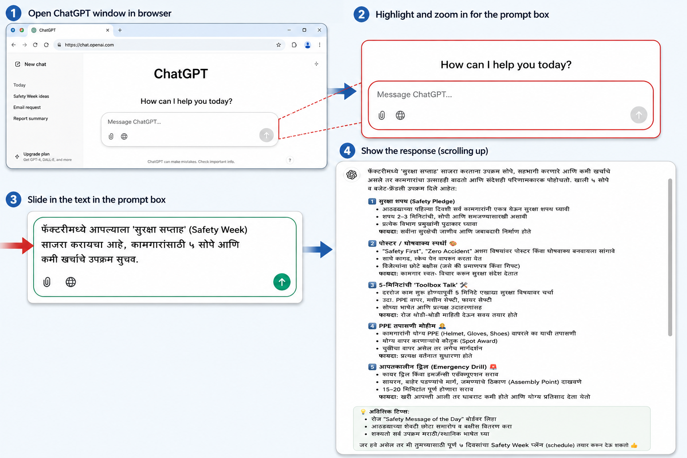
वापर ४: जुन्या मसुद्याला सुंदर रूप देणे
आपण घाईत लिहिलेले साधे वाक्य वरिष्ठ अधिकाऱ्यांकडे पाठवण्यापूर्वी कसे सुधारता येते पहा:
- **तुमचे मूळ वाक्य:** *"सगळ्यांना सांगा पुढच्या महिन्यापासून शिफ्टची वेळ बदलणार आहे."*
- **AI ला दिलेली सूचना:** *"या वाक्याचे रूपांतर अधिकृत आणि आदरयुक्त परिपत्रकात कर."*
वापर ५: भाषांतर आणि सोपी भाषा करणे
वेगवेगळ्या प्रांतातील कामगारांशी संवाद साधताना भाषेची अडचण आता दूर होईल:
- इंग्रजी सूचनांचे मराठी किंवा हिंदीत अचूक आणि सोपे भाषांतर करून मिळते.
वापर ६: एक्सेलचे फॉर्म्युले तयार करणे
एक्सेलमध्ये काम करताना एखादे सूत्र आठवत नसेल तर मॅन्युअल शोधण्याची गरज नाही:
- **अशी सूचना द्या:** *"मला एक्सेलचा असा फॉर्म्युला लिहून दे जो कॉलम B आणि कॉलम C मधील दिवसांचे अंतर मोजेल."*
वापर ७: वैयक्तिक आयुष्यातील मदत
ऑफिसच्या कामाव्यतिरिक्त तुमच्या खाजगी आयुष्यातही हे टूल्स खूप उपयोगी पडतात:
- कुटुंबासोबत फिरायला जाण्यासाठी दिवसांचे संपूर्ण नियोजन तयार करणे.
- मित्रांना पाठवण्यासाठी शुभेच्छा संदेश तयार करणे.
चांगला प्रश्न = उत्तम उत्तर!
कॉम्प्युटरला तुम्ही जेवढी सविस्तर माहिती द्याल, तेवढे त्याचे उत्तर अचूक असेल:
- ❌ अपूर्ण सूचना: *"सुट्टीचा अर्ज लिहून दे."*
- ✔ उत्तम सूचना: *"वैद्यकीय आणीबाणी आल्यामुळे ३ दिवसांची रजा हवी आहे, ईमेलवर उपलब्ध राहीन असा व्यावसायिक ईमेल लिहून दे."*
सूचना सुधारण्याचा सराव
चला, एका साध्या सूचनेला आपण अधिक प्रभावी बनवूया:
- **साधी सूचना:** *"फॅक्टरीच्या सुरक्षेची नोटीस लिही."*
नवशिक्यांकडून होणाऱ्या ३ मुख्य चुका
- फक्त दोन शब्दांत काम सांगणे आणि खूप मोठ्या पॉलिसीची अपेक्षा करणे.
- डोळे मिटून विश्वास ठेवणे आणि मसुदा न वाचता पुढे पाठवणे.
- गोपनीय माहिती जसे की बँक डिटेल्स, पगार पब्लिक टूल्समध्ये पेस्ट करणे. **(हे कधीही करू नका!)**
यशस्वी वापराचा कानमंत्र
AI असिस्टंटला तुमच्या ऑफिसमधील एका नवीन आणि हुशार असिस्टंटसारखे समजा. त्याच्याकडून उत्तम काम करून घेण्यासाठी तुम्हाला त्याला पार्श्वभूमी सांगावी लागेल.
या भागाचा गोषवारा
- AI टूल्सच्या मदतीने ईमेल्स लिहिणे आणि एक्सेलचे फॉर्म्युले तयार करणे अत्यंत सोपे झाले आहे.
- तुमच्या सूचनेमधील स्पष्टतेवरच उत्तराचा दर्जा अवलंबून असतो.
विभाग ६: प्रॉम्टिंगची जुजबी माहिती (Mastering Prompts)
प्रॉम्ट (Prompt) म्हणजे काय? सोप्या भाषेत, कॉम्प्युटरकडून काम करून घेण्यासाठी आपण चॅट बॉक्समध्ये जी सूचना टाईप करतो, त्याला 'प्रॉम्ट' म्हणतात.
- प्रॉम्टिंग ही AI शी संवाद साधण्याची कला आहे.
- तुमचे शब्दच कॉम्प्युटरला सांगतात की उत्तराचा टोन कसा असावा आणि फॉरमॅट कसा असावा.
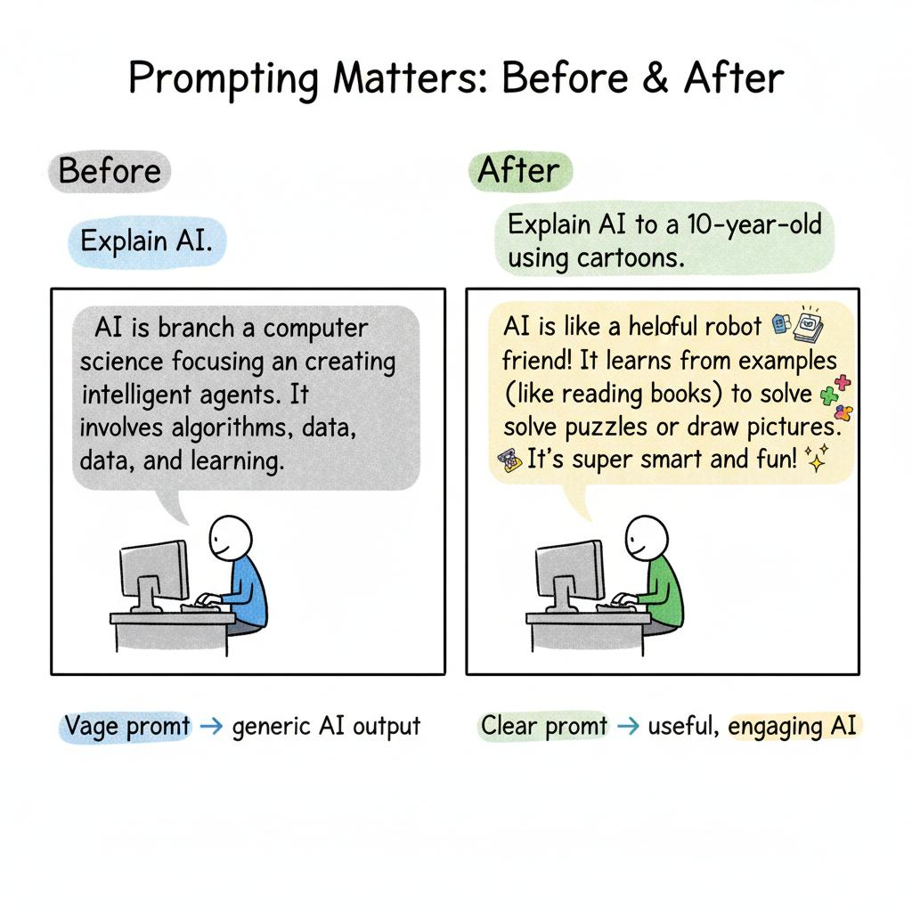
स्पष्ट प्रॉम्ट का महत्त्वाचा आहे?
कॉम्प्युटर आपल्या मनातले विचार ओळखू शकत नाही. त्याला आपल्या कंपनीचा इतिहास माहित नसतो. जर आपली सूचना मोघम असेल, तर त्याचे उत्तरही निरुपयोगी असेल. म्हणूनच, योग्य आणि नेमके शब्द वापरणे गरजेचे आहे.
केस स्टडी: चुकीचा प्रॉम्ट विरुद्ध योग्य प्रॉम्ट
- **चुकीची पद्धत:** *"एक नोटीस लिही."* असे लिहिल्याने टूल एक लांबलचक आणि सामान्य निबंध लिहून देईल.
- **योग्य पद्धत:** संपूर्ण संदर्भ आणि रचना स्पष्ट लिहिल्यामुळे पहिल्याच फटक्यात कामाचा मसुदा तयार होतो.
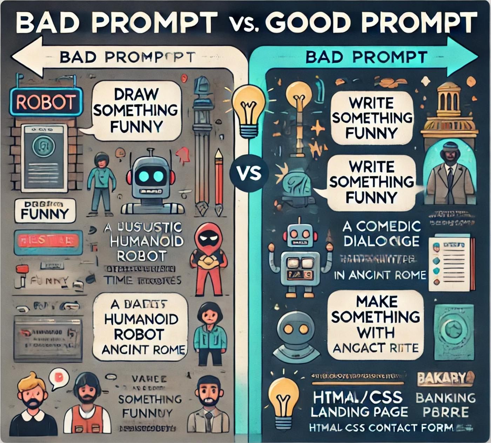
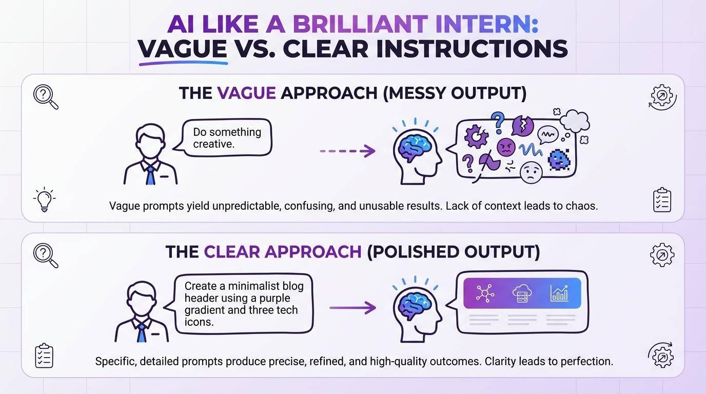
उत्तम प्रॉम्ट लिहिण्याचे ४ सुवर्णनियम
- 🎯 १. स्पष्टता (Clear): सरळ आणि साधे शब्द वापरा.
- 📊 २. नेमकेपणा (Specific): शब्दांची मर्यादा किंवा आकडे स्पष्ट सांगा.
- 🏢 ३. संदर्भ (Context): पार्श्वभूमी सांगा (उदा. हे पत्र कोणासाठी आहे).
- 📋 ४. फॉरमॅट (Format): उत्तर कसे हवे आहे ते सांगा (उदा. बुलेट पॉईंट्स, टेबल).
नियम १: स्पष्टता (Be Clear)
गोलगोल बोलण्याऐवजी कॉम्प्युटरला थेट सांगा की त्याला नक्की काय करायचे आहे:
- ❌ अस्पष्ट: *"ऑफिस सेफ्टीबद्दल आमची टीम काय काम करते त्याबद्दल काहीतरी लिही."*
- ✔ स्पष्ट: *"फॅक्टरीच्या सुरक्षा नियमांचे पालन करण्यासाठी HR विभागाच्या ५ मुख्य जबाबदाऱ्यांची यादी तयार कर."*
नियम २: नेमकेपणा (Be Specific)
उत्तराला भरकटण्यापासून रोखण्यासाठी त्याला मर्यादा आखून द्या:
- ❌ मोघम: *"ऑफिसच्या कार्यक्रमासाठी काहीतरी चांगल्या आयडिया दे."*
- ✔ नेमके: *"ऑफिसच्या कॉन्फरन्स रूममध्ये खेळता येतील असे ६ गमतीशीर संघ उपक्रम सुचव."*
नियम ३: संदर्भ देणे (Provide Context)
पार्श्वभूमी समजल्यामुळे AI ला योग्य तो टोन निवडणे सोपे जाते:
- ❌ संदर्भ नसलेले: *"बायोमॅट्रिक सिस्टीम बंद असण्याबाबत मेसेज लिही."*
- ✔ ससंदर्भ: *"शनिवारी मुख्य बायोमॅट्रिक मशीन दुरुस्तीसाठी बंद राहणार आहे, सर्व सुपरवायझर्सना कामगारांची हजेरी मॅन्युअल रजिस्टरमध्ये नोंदवण्याची आठवण करून देणारा मेसेज लिही."*
नियम ४: फॉरमॅट ठरवणे (Define the Format)
माहिती स्क्रीनवर कशी मांडलेली हवी आहे, हे तुम्ही स्वतः ठरवू शकता:
- ❌ फॉरमॅट नसलेले: *"नवीन वेतन कायद्यातील मुख्य बदल समजावून सांग."*
- ✔ सुंदर फॉरमॅट: *"नवीन वेतन कायदा २०१९ मुळे झालेले मुख्य बदल एका स्वच्छ टेबलमध्ये दाखव. डाव्या बाजूला 'जुने नियम' आणि उजव्या बाजूला 'नवीन नियम' असावे."*
प्रॉम्ट तयार करण्याचे एक साधे सूत्र (Formula)
नेहमी लक्षात ठेवा, एक उत्तम प्रॉम्ट या चार गोष्टी मिळून बनतो:
मुख्य काम + नेमकी माहिती + योग्य संदर्भ + हवा असलेला फॉरमॅट
रोजच्या कामात वापरता येतील असे रेडीमेड प्रॉम्ट्स
- *"मी खाली दिलेला ईमेलचा ड्राफ्ट वाच आणि त्याची भाषा अधिक व्यावसायिक बनवून दे."*
- *"या परिच्छेदातील माहिती अतिशय सोप्या भाषेत बदल, जेणेकरून कामगाराला ती सहज समजेल."*
प्रॉम्ट सुधारण्याचा प्रत्यक्ष सराव
चला, एका साध्या सूचनेला आपल्या सूत्रात बसवून पाहूया:
- **सुरुवात:** *"एक जॉब डिस्क्रिप्शन (Job Description) लिही."*
प्रगत पद्धत: कॉम्प्युटरला एक 'भूमिका' देणे (Roleplay)
AI ला प्रश्नाचे उत्तर देण्यापूर्वी एखाद्या क्षेत्रातील तज्ज्ञ बनण्याची सूचना दिल्यास उत्तर अधिक दर्जेदार मिळते:
- **प्रॉम्टची पद्धत:** *"तू फॅक्टरी कायद्याचा ३० वर्षांचा अनुभव असलेला तज्ज्ञ वकील आहेस, असे समजून खालील वेअरहाउस सुरक्षेचे नियम तपास."*
उत्तरामध्ये बदल कसे करून घ्यावे?
कॉम्प्युटरने दिलेले पहिले उत्तर अंतिम मानण्याची गरज नाही. तुम्ही त्याच्याशी संवाद सुरू ठेवून बदल करून घेऊ शकता:
- *"हे उत्तर खूप मोठे आहे, याची लांबी अर्धी कर आणि महत्त्वाच्या ओळीच ठेव."*
मोठ्या कामांसाठी 'तुकडे-तुकडे' पद्धत (Multi-Step Strategy)
जेव्हा खूप मोठे धोरण किंवा रिपोर्ट तयार करायचा असतो, तेव्हा सर्व काम एकाच वेळी न सांगता टप्प्याटप्प्याने करून घ्या:
- **पायरी १:** प्रथम AI ला फक्त विषयाची ढोबळ रूपरेषा तयार करायला सांगा.
- **पायरी २:** त्या आउटलाईन मधील सर्वात चांगल्या मुद्द्यांची निवड करून त्याला तो मुद्दा सविस्तर लिहिण्यास सांगा.
३ गोष्टी नेहमी टाळा (Common Pitfalls)
- खूप मोठे आणि गुंतागुंतीचे परिच्छेद लिहून त्यात अनेक विरोधी सूचना एकत्र देणे.
- मसुदा कोणासाठी लिहीत आहोत हे न सांगणे आणि फॉरमॅट स्पष्ट न करणे.
छोटा प्रॅक्टिकल सराव
साध्या सूत्राचा वापर करून प्रॉम्ट तयार करा:
- कंपनीच्या सर्व कर्मचाऱ्यांना वार्षिक मिटिंगसाठी आमंत्रित करणारे पत्र लिहिण्यासाठी प्रॉम्ट तयार करा.
ग्रुप ॲक्टिव्हिटी: प्रॉम्टचे युद्ध!
- आपण दोन गट तयार करू आणि दोन्ही गटांना ऑफिसचे एकच काम दिले जाईल.
- दोन्ही गट आपापल्या पद्धतीने वेगळे शब्द वापरून प्रॉम्ट तयार करतील आणि आपण तपासू.
नेहमी लक्षात ठेवा
तुमच्या सूचनेची स्पष्टता जेवढी जास्त, तेवढे कॉम्प्युटरचे काम दर्जेदार. प्रॉम्ट लिहिणे म्हणजे ऑफिसमधील एखाद्या नवीन सहकाऱ्याला काम समजावून सांगण्याइतकेच सोपे आहे.
या भागाचा गोषवारा
- प्रॉम्ट म्हणजे कॉम्प्युटरला दिलेली लिखित आज्ञा होय.
- आपल्या साध्या सूत्राचा (काम + संदर्भ + फॉरमॅट) वापर केल्यास पहिल्याच वेळी उत्तम उत्तर मिळते.
विभाग ७: प्रत्यक्ष सराव सत्र (Hands-on Practice)
आता आपण स्वतः कॉम्प्युटरवर प्रॉम्ट्स टाईप करून सराव करणार आहोत. अजिबात घाबरू नका, चुकले तरी चालेल—आपल्याला फक्त शिकायचे आहे.
सराव कसा करायचा?
- १. प्रसंग वाचा: स्लाईडवर दिलेला ऑफिसचा प्रसंग नीट समजून घ्या.
- २. प्रॉम्ट तयार करा: आपल्या सूत्राचा वापर करून चॅट बॉक्समध्ये सूचना टाईप करा.
ॲक्टिव्हिटी १: व्यावसायिक ईमेल लिहिणे
प्रसंग: उद्या तुमच्या गाडीचे गॅरेजमध्ये काम काढल्यामुळे तुम्हाला ऑफिसला यायला १ तास उशीर होणार आहे, त्याबाबत ईमेल पाठवायचा आहे.
ॲक्टिव्हिटी १ वर विचार करा
- कॉम्प्युटरने पहिल्याच प्रयत्नात ईमेलचा फॉरमॅट नीट लिहिला का?
ॲक्टिव्हिटी २: कठीण पॉलिसी सोपी करणे
आव्हान: कंपनीच्या सुरक्षा पुस्तिकेतील एक मोठा आणि कायदेशीर शब्दांचा कठीण परिच्छेद कॉपी करा.
- AI असिस्टंटला सांगा की हा परिच्छेद वाचून कामगारांसाठी अगदी सोप्या भाषेत ३ नियम तयार कर.
ॲक्टिव्हिटी ३: कल्पनाशक्तीचे आव्हान (Idea Generation)
आव्हान: आपल्या ऑफिसच्या कॅन्टीनमध्ये अन्न वाया जाण्याचे प्रमाण कमी करण्यासाठी ५ कल्पना शोधायच्या आहेत.
ॲक्टिव्हिटी ४: खराब मसुदा दुरुस्त करणे
आव्हान: या चुकीच्या वाक्याला सुधारा: *'सगळ्यांनी शुक्रवारी संध्याकाळपर्यंत आपापले टाईम शीट भरलेच पाहिजेत, नाहीतर पगार उशिरा होईल.'*
ॲक्टिव्हिटी ५: तुमच्या स्वतःच्या कामाचा सराव
आव्हान: तुमच्या रोजच्या कामातील असे कोणतेही एक साधे काम आठवा आणि त्यासाठी प्रॉम्ट तयार करा.
अनुभव शेअरिंग आणि चर्चा
- तुम्ही तयार केलेले प्रॉम्ट्स तुमच्या सहकाऱ्यांशी आणि मित्रांशी शेअर करा आणि त्यावर चर्चा करा.एकमेकांचे अनुभव ऐकल्याने आणि तुलना केल्याने तुमची समज अधिक वाढेल.
प्रत्यक्ष सरावातून आपण काय शिकलो?
- मोघम बोलण्यापेक्षा नेमकी माहिती दिल्यास AI कडून खूप चांगले उत्तर मिळते.
- आपल्या डोक्यातील कच्च्या कल्पनेला सुंदर रूप देण्यासाठी हे एक उत्तम साधन आहे.
आत्मविश्वास वाढवा!
अभिनंदन! तुम्ही स्वतः प्रॉम्ट लिहिला, चुका दुरुस्त केल्या आणि ऑफिसच्या समस्या सोडवण्यासाठी AI चा यशस्वी वापर केला. तुम्ही आता अधिकृतपणे 'स्मार्ट वर्कर' झाला आहात! 🎉
विभाग ८: कामाची गती वाढवणे (Workplace Productivity)
AI हे तुमच्या ऑफिसमधील प्रत्येक विभागात तुमचे काम वेगाने करण्यासाठी आणि तुमचा ताण कमी करण्यासाठी बनवले गेले आहे.
आपल्या ऑफिसमध्ये याचा रोज कुठे फायदा होईल?
- 📝 कागदपत्रे आणि मसुदा: परिपत्रके, नोटीस, अधिकृत पत्रे आणि ईमेलचे ड्राफ्ट्स तयार करणे.
- 🗣 उत्तम संवाद: पत्रांमधील भाषा सुधारेल, टोन व्यावसायिक राहील आणि प्रांतीय भाषांतराची चिंता मिटेल.
- 📊 एक्सेल आणि डेटा: एक्सेल मधील कठीण सूत्रे शोधणे आणि विखुरलेली माहिती नीट मांडणे.
- 📅 नियोजन आणि अजेंडा: कोणत्याही ट्रेनिंग किंवा मिटिंगचे वेळापत्रक आणि चेकलिस्ट बनवणे.
ईमेल आणि संवादाचा वेग वाढवणे
- कच्च्या आणि घाईत लिहिलेल्या मुद्यांवरून संपूर्ण अधिकृत पत्र तयार करणे.
- एखाद्या पत्राचा टोन बदलणे (उदा. सप्लायरला कडक शब्दात किंवा सहकाऱ्याला प्रेमाने सांगणे).
- ग्राहकांनी विचारलेल्या नेहमीच्या प्रश्नांची उत्तरे देण्यासाठी रेडीमेड साचे (Templates) बनवणे.
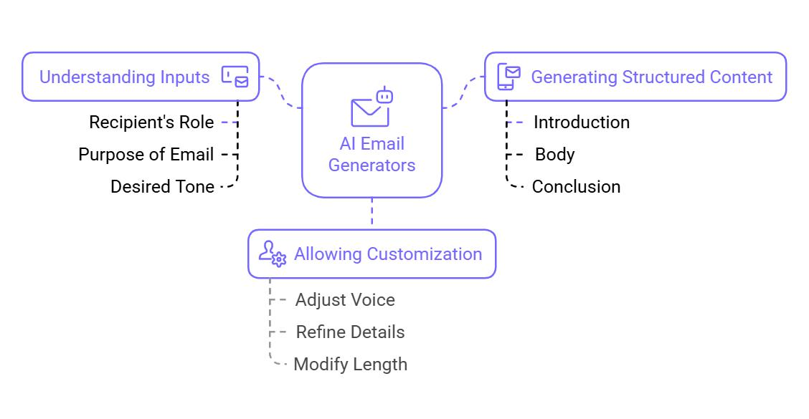
रिपोर्ट्स आणि पॉलिसी रायटिंग
- मिटिंगमध्ये झालेल्या अस्ताव्यस्त चर्चेच्या टिपणांवरून एक 'मिनिट्स ऑफ मिटिंग' (MOM) बनवणे.
- ट्रेनिंग हँडबुक किंवा स्टँडर्ड ऑपरेटिंग प्रोसिजर (SOP) ची प्राथमिक रूपरेषा तयार करणे.
- कठीण तांत्रिक माहितीचे रूपांतर साध्या नियमांमध्ये करणे.
डेटा आणि एक्सेल मधील स्मार्ट मदत
- आपल्याला काय मोजायचे आहे ते फक्त सोप्या इंग्रजीत सांगितले, की टूल त्याचे कठीण फॉर्म्युल्यामध्ये रूपांतर करून देते.
- एक्सेलमध्ये येणारे एरर शोधून ते कसे दुरुस्त करायचे, याचे मार्गदर्शन मिळते.
HR आणि प्रशासकीय कामांचे सोपे उपाय
- जॉब प्रोफाइल बनवणे: कोणत्याही पदाचे नाव आणि गरजेचे शिक्षण सांगितले की सвиस्तर जॉब डिस्क्रिप्शन तयार मिळते.
- इंटरव्ह्यूची तयारी: उमेदवाराला कोणते प्रश्न विचारावेत, याची यादी तयार करणे.
- कार्यालयीन घोषणा: सुट्ट्या, सण किंवा ऑफिसच्या नियमांमधील बदलांची माहिती देणाऱ्या नोटिसेस बनवणे.
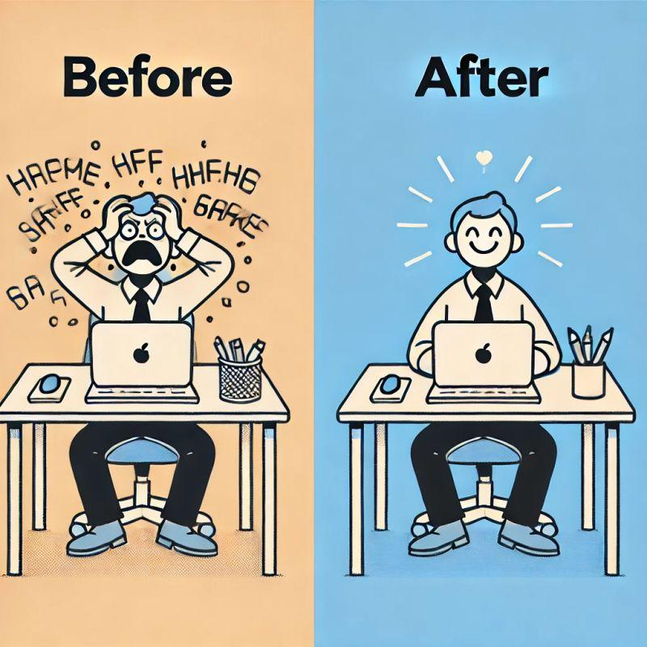
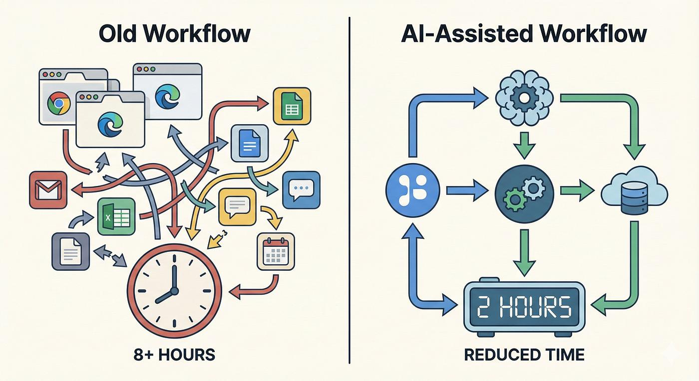
कार्यक्रम आणि मिटिंगचे अचूक नियोजन
- कोणत्याही प्रोजेक्टच्या रिहर्सल किंवा ट्रेनिंग सेशनसाठी वेळेचे तंतोतंत नियोजन करणे.
- नवीन कर्मचाऱ्यांच्या पहिल्या दिवसाच्या स्वागतासाठी लागणाऱ्या गोष्टींची चेकलिस्ट बनवणे.
स्वतःचे ज्ञान वाढवण्यासाठी (Personal Tutor)
या टूलचा वापर तुम्ही स्वतःला अधिक सक्षम करण्यासाठी एक वैयक्तिक शिक्षक म्हणून करू शकता:
- नवीन सरकारी नियम, फॅक्टरी ॲक्ट किंवा लेबर लॉ चे कठीण क्लॉज सोप्या भाषेत समजून घेणे.
- वर्ड किंवा एक्सेल मधील अॅडव्हान्स फीचर्स कसे वापरायचे, याचे स्टेप-बाय-स्टेप धडे घेणे.
खरा फायदा: कोऱ्या पानावरील वेळ वाचवणे
कोणतेही नवीन पत्र किंवा रिपोर्ट लिहिताना सुरुवातीची काही वाक्ये सुचण्यातच आपला खूप वेळ जातो. AI असिस्टंट आपल्याला काही सेकंदात एक कच्चा मसुदा (First Draft) तयार करून देतो. यामुळे आपला विचार करण्याचा वेळ वाचतो.
कामाच्या पद्धतीतील फरक (आधी आणि आता)
- जुन्या पद्धतीचा वर्कफ्लो: कोरी स्क्रीन पाहून विचार करणे → एकेक वाक्य स्वतः टाईप करणे → स्पेलिंग दुरुस्त करण्यात १ तास घालवणे.
- स्मार्ट वर्कफ्लो: कच्चे मुद्दे AI मध्ये टाकणे → सेकंदात आलेला मसुदा वाचणे → गरजेनुसार बदल करणे → ५ मिनिटात काम पूर्ण!
मानवी कौशल्याचे महत्त्व विसरू नका
AI हे फक्त एक साधन आहे जे तुम्हाला लिहून किंवा फॉरमॅट करून देऊ शकते. पण त्या माहितीमध्ये तुमच्या कंपनीचा आत्मा, तुमची प्रदीर्घ कामाची समज फक्त तुम्हीच जोडू शकता.
एक प्रत्यक्ष अनुभव घेऊया
समजा पुढील आठवड्यात फॅक्टरीचे सेफ्टी ऑडिट (Safety Audit) आहे आणि त्याची नोटीस काढायची आहे:
- **AI शिवाय:** तुम्ही १० मिनिटे विचार कराल की सुरुवात कशी करू, जेणेकरून लोग गांभीर्याने घेतील.
- **AI सोबत:** तुम्ही लिहाल: *"पुढील मंगळवारी सेफ्टी ऑडिट आहे, सुरक्षा नियम पाळणे अनिवार्य आहे अशी नोटीस लिही."* काम २ सेकंदात पूर्ण!
तुमच्या स्वतःच्या कामाचे मूल्यमापन करा
चला, तुमच्या स्वतःच्या साप्ताहिक वेळापत्रकाकडे नजर टाकूया:
- अशी कोणती दोन कामे आहेत ज्यामध्ये तुमचा खूप वेळ फक्त टाईप करण्यात किंवा माहिती गोळा करण्यात जातो?
आपसातील चर्चा
- ऑफिसमधील कोणते काम तुम्ही उद्यापासून सर्वात आधी AI च्या मदतीने करून पाहणार आहात?
या भागाचा गोषवारा
- AI मुळे ऑफिसमधील कंटाळवाणी आणि लेखी कामे प्रचंड वेगाने पूर्ण होतात.
- नेहमीच्या लेखी कामांचा वेळ वाचवून आपण अधिक महत्त्वाच्या कामांवर लक्ष केंद्रित करू शकतो.
विभाग ९: AI च्या मर्यादा (Reality Check)
जरी हे तंत्रज्ञान अफाट काम करत असले, तरी तो शेवटी एक कॉम्प्युटर प्रोग्राम आहे हे विसरून चालणार नाही. त्याला माणसासारखी स्वतःची बुद्धी किंवा भावना नसतात.
कॉम्प्युटर चुकीची माहिती देऊ शकतो!
- **भ्रम (Hallucinations):** कधीकधी कॉम्प्युटर एखादी खोटी तारीख किंवा चुकीचे गणित अगदी पूर्ण आत्मविश्वासाने खरे असल्यासारखे लिहून देतो.
महत्त्वाचा नियम: कोणतीही महत्त्वाची आकडेवारी किंवा सरकारी कायदेशीर नियम AI कडून आल्यावर थेट वापरू नका, ते आधी तपासून पहा.
त्याला माणसासारखे 'समजत' नाही
- AI ला तुमच्या व्यवसायाचे उद्दिष्ट किंवा दोन कर्मचाऱ्यांमधील अंतर्गत संबंध समजत नाहीत.
- ते फक्त इंटरनेटवरील लाखो शब्दांचा अभ्यास करून वाक्य बनवते.
अति-अवलंबनाचे धोके (Over-Dependence)
- कॉम्प्युटरने दिलेला मसुदा न वाचता तसाच कॉपी-पेस्ट करून पुढे पाठवल्यास कधीकधी ऑफिसमध्ये गैरसमज किंवा मोठ्या चुका होऊ शकतात.
मर्यादित ज्ञान आणि संदर्भ
तुम्ही प्रॉम्ट बॉक्समध्ये जेवढी माहिती लिहाल, कॉम्प्युटरला फक्त तेवढीच परिस्थिति समजते. तुमच्या ऑफिसमधील संस्कृती याची त्याला कल्पना नसते.
स्मार्ट वर्करचा मूळ मंत्र
ऑफिसच्या कामात तंत्रज्ञानाचा वापर करताना हा एकच नियम नेहमी लक्षात ठेवा:
"विश्वास ठेवा... पण पडताळणी करा!"
एक छोटा विचार करा
- कंपनीच्या नवीन नियमांचे परिपत्रक सर्व कर्मचाऱ्यांना पाठवण्यापूर्वी तुम्ही ते स्वतः न वाचता तसेच पुढे पाठवाल का?
विभाग १०: सुरक्षित आणि जबाबदार वापर (AI Safety)
ऑफिसमध्ये काम करताना तंत्रज्ञानाचा वापर जितका फायदेशीर आहे, तितकाच तो नियमांना धरून आणि सुरक्षित असणे आवश्यक आहे.
डेटा गोपनीयता: गोपनीयतेचे रक्षण
कंपनीची गुप्त माहिती सुरक्षित ठेवण्यासाठी पुढील गोष्टी **कधीही** चॅट बॉक्समध्ये टाकू नका:
- ❌ कर्मचाऱ्यांची खाजगी माहिती (जसे की पगार, घरचा पत्ता, आधार नंबर).
- ❌ कंपनीचे गुप्त आर्थिक हिशोब, ऑडिट रिपोर्ट किंवा भविष्यातील बिझनेस प्लॅन्स.
- ❌ तुमचे पासवर्ड्स, बँक खात्याचे नंबर्स किंवा ओटीपी (OTP).
माहितीची सत्यता नेहमी तपासा
कॉम्प्युटरने लिहिलेल्या पत्रातील आकडे किंवा कायद्याचे संदर्भ अधिकृत सरकारी वेबसाईट किंवा कंपनीच्या पुस्तिकेशी जुळवून पाहिल्याशिवाय त्यावर शिक्कामोर्तब करू नका.
नैतिक आणि जबाबदार वापर
- या टूल्सचा वापर फक्त स्वतःच्या कामाची गती आणि उत्पादकता वाढवण्यासाठी प्रामाणिकपणे करा.
- कोणाची फसवणूक करण्यासाठी किंवा चुकीची माहिती पसरवण्यासाठी या तंत्रज्ञानाचा वापर करू नका.
- खरी नावे टाळा—‘कर्मचारी अ’, ‘व्हेंडर क्ष’ असे काल्पनिक शब्द वापरून माहिती सुरक्षित ठेवा आणि काम पूर्ण करा.
संवेदनशील कामासाठी ‘ॲनॉनिमायझेशन’ वापरा:
डेटा मधील पूर्वग्रह (Bias) लक्षात ठेवा
AI हे इंटरनेटवरील जुन्या माहितीवरून शिकलेले असते. इंटरनेटवर आधीपासून जी मानवी पूर्वग्रहांची माहिती उपलब्ध असते, तीच माहिती कॉम्प्युटरच्या उत्तरातही उमटू शकते.
यशस्वी कामाचे समीकरण
AI चा प्रचंड वेग + माणसाची बुद्धी आणि नियंत्रण = सर्वोत्तम आणि अचूक काम
तुमची अंतिम चेकलिस्ट (Sign-off Checklist)
कॉम्प्युटरने तयार केलेले कोणतेही पत्र प्रिंट किंवा ईमेल करण्यापूर्वी स्वतःला हे ३ प्रश्न नक्की विचारा:
- 📦 तथ्य तपासणी: मी सर्व आकडे अधिकृत स्रोतावरून तपासून घेतले आहेत का?
- 🗣 भाषेचा दर्जा: या पत्राचा टोन आपल्या कंपनीच्या संस्कृतीला साजेसा आहे का?
- 🔐 माहितीची सुरक्षा: यात कोणतीही खाजगी माहिती चुकून पुढे जात नाही ना?
विभाग ११: भविष्य आणि समारोप
हे तंत्रज्ञान अत्यंत वेगाने बदलत आहे. येणाऱ्या काळात ते आपल्या ऑफिसच्या सर्व सॉफ्टवेअर्सचा एक भाग बनणार आहे. आजच याचे मूलभूत नियम शिकणे आपल्याला भविष्यात खूप पुढे घेऊन जाईल.
AI आणि आपल्या नोकऱ्यांचे भविष्य
- AI मुळे कागदपत्रांची कामे, भाषांतर आणि डेटा फॉरमॅटिंग यांसारखी यांत्रिक कामे आपोआप होतील.
- पण माणसाची आपुलकी, कठीण प्रसंगातील निर्णयक्षमता आणि एकमेकांशी संवाद साधण्याचे कसब कॉम्प्युटर कधीही हिरावून घेऊ शकत नाही.
मुख्य विचार: AI माणसाची जागा घेणार नाही, पण जे लोग AI का वापर करायला शिकतील, ते न शिकणाऱ्या लोकांपेक्षा कामात खूप पुढे निघून जातील.
भविष्यासाठी आवश्यक असणारी ३ कौशल्ये
बदलत्या काळात स्वतःला सक्षम ठेवण्यासाठी या तीन गोष्टींवर भर द्या:
- प्रॉम्ट इंजिनिअरिंग (Prompt Engineering): कॉम्प्युटरला स्पष्ट आणि नेमक्या सूचना देण्याची कला.
- क्रिटिकल थिंकिंग (Critical Thinking): AI च्या उत्तरातील चुका ओळखून सुधारणा करण्याची क्षमता.
- निर्णयक्षमता (Decision Making): योग्य माहिती निवडून अंतिम निर्णय घेण्याची सवय.
विचारांची दिशा बदला: भीती सोडा, मित्र बनवा!
- ❌ घाबरू नका: हे तंत्रज्ञान तुमची नोकरी हिरावून घेण्यासाठी आलेले नाही.
- ✔ शिकून घ्या: याला आपला एक वैयक्तिक असिस्टंट समजा.
- ✔ प्रगती करा: वाचलेल्या वेळेचा वापर ऑफिसच्या मोठ्या आणि महत्त्वाच्या जबाबदाऱ्या पार पाडण्यासाठी करा.
सुरुवात छोटी करा, पण आजच करा!
यासाठी कोणत्याही मोठ्या प्रशिक्षणाची वाट पाहण्याची गरज नाही. उद्याच गुगलवर एखादे मोफत टूल ओपन करा आणि तुमच्या रोजच्या कामातील एक साधे पत्र लिहिणे, कठीण एक्सेल फॉर्म्युला विचारणे यापासून सुरुवात करा. वापराल तितके शिकाल!
ट्रेनिंग संपण्यापूर्वी स्वतःला एक वचन द्या!
आजचे हे सत्र संपवण्यापूर्वी आपल्या मनाशी एक छोटा संकल्प करूया:
- तुमच्या कामातील असे एक काम ठरवा ज्यामध्ये तुमचा लिहिण्याचा किंवा टाईप करण्याचा वेळ जातो.
- उद्या सकाळी ते काम करताना तुम्ही पहिल्यांदा AI असिस्टंटची मदत घेऊन त्याचा ड्राफ्ट तयार कराल, हा सराव सुरू करा.
आजच्या संपूर्ण सत्राचा गोषवारा
- AI हे माहितीमधील पॅटर्न्स ओळखून आपले काम सोपे करणारे एक आधुनिक साधन आहे.
- कामाची सत्यता तपासणे आणि माहितीची सुरक्षा राखणे ही नेहमीच आपली अंतिम जबाबदारी असेल.
खूप खूप धन्यवाद!
काही शंका किंवा प्रश्न आहेत का?
आजच्या सत्रात उत्साहाने सहभागी झाल्याबद्दल धन्यवाद!